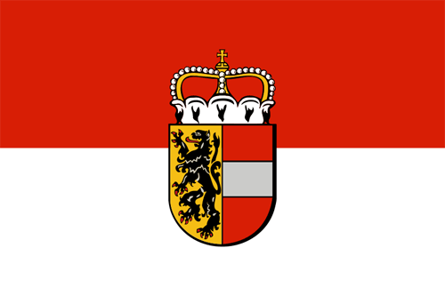

Amadeus Mozart was born on 27 January 1756 in Salzburg. He’s Family was composed by his Mother Anna Maria Pertl, his Father Leopold Mozart and his Sister Maria Anna . His Grandfather was Johann Georg Mozart .And Mozart died on December 5, 1791

Click here to find out more informartion#